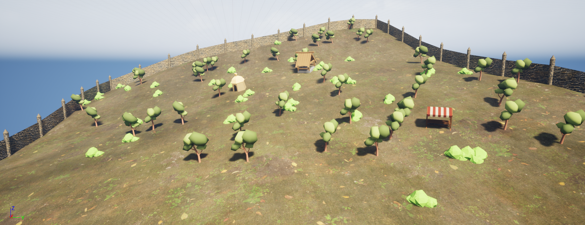
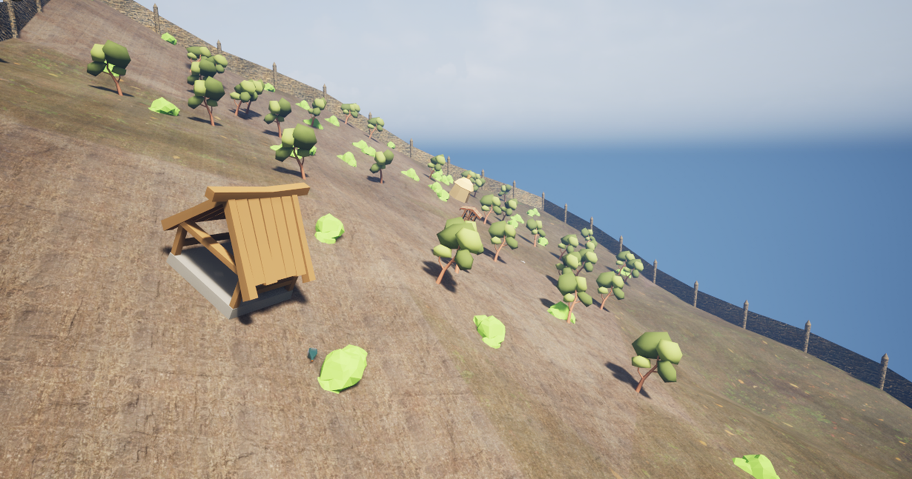
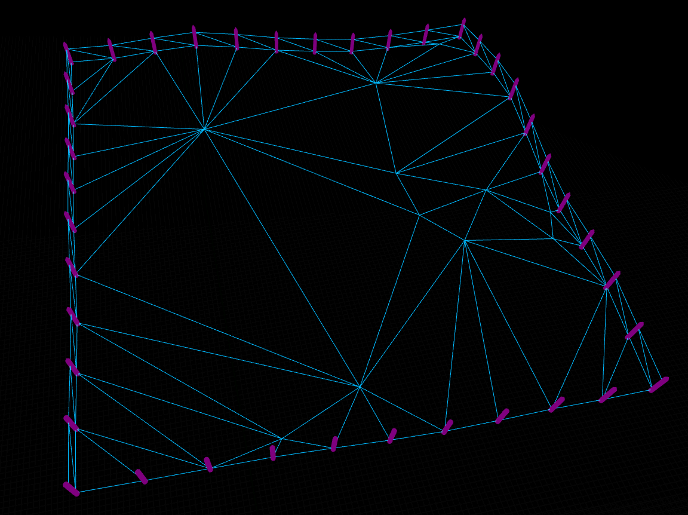
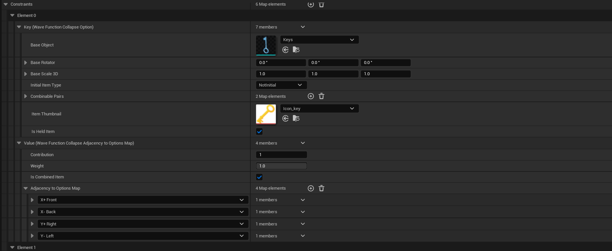

Puzzle World Generator

I created this project for my dissertation piece. My main aim was to combine a procedural terrain with a generative
puzzle mechanic algorithm to create a world which is ever changing on each playthrough.
Demo Video
Below is a video of the level generating a few different results:
Planning & Development
I decided to use Unreal Engine for this project. This was due to it's inclusion of the procedural mesh component and the range of plugins and
modules it has at its disposal. I used C++ to develop the majority of the functionality alongisde blueprint for the UI components such as the
inventory.

For the terrain itself. I decided to use two different techniques for the triangulation. To make the terrain faces look organic while not have too many
verticies, I decided to implement a Delaunay Triangulation algorithm to get a flat plane made up of randomized faces. The only thing being randomized
were the vericies inputted into the algorithm. To then give the terrain believable height. I then added a 2D Perlin Noise calculation which took in the current
2D Vector of each generated position and provided a height result that was cohesive to other 2D vector positions close by.

For the puzzle generation, I did some research into different generation algorithms. I wanted a narritive puzzle system where the player could
combine different items to generate an output item that would help them progress. I found that the Wave Function Collapse can replicate the functionality
of this quite well. I modified and repurposed an existing WFC plugin that comes with Unreal Engine so that it takes in a list of items, Calculates an
output item and then works backwards to generate a list of solvable items that can in some way be combined to produce the output item.
To store the data for the output and input items. I used a data asset:
